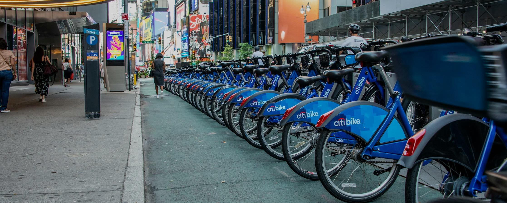
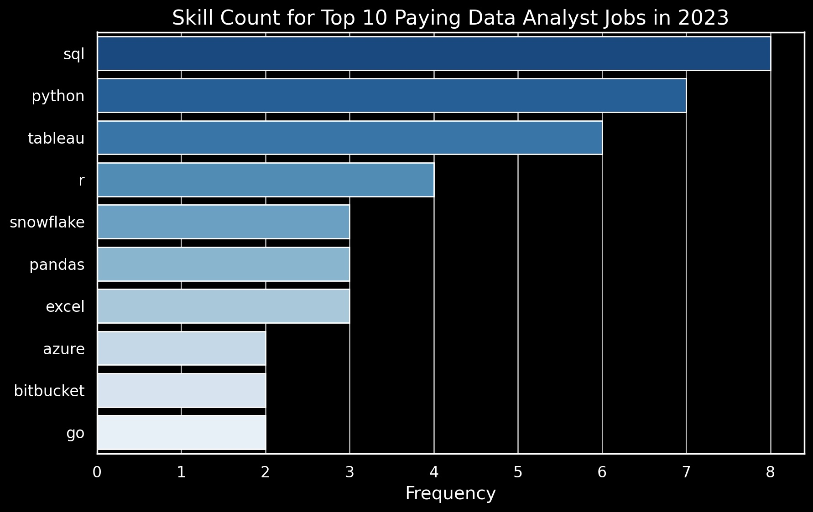
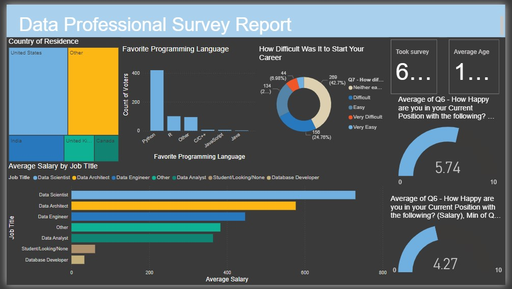

Bicycle sharing
Moving Trends and the Weather
Recently, there has been an initiative to offer free or affordable access to bicycles for short-distance trips in urban areas as a substitute for motorized public transport or private vehicles. This initiative aims to decrease traffic congestion, noise, and air pollution.
The purpose of this project is to uncover current trends in London bike share data by utilizing visualization tools to showcase historical data.

Data Analyst Jobs Skills and Salaries

Motivated by a quest to navigate the data analyst job market more effectively, this project was conceived with the aim of identifying the highest-paying and most in-demand skills. This project delves into data analyst roles, highlighting top-paying jobs, in-demand skills, and the intersection where high demand meets high salary in data analytics.
Data Professional Survey Report

In this professional career survey project, I was responsible for data cleaning and analysis, culminating in the creation of an informative insights report using Power BI.